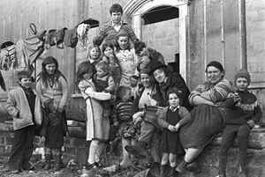

Bobbie Hanvey
Bobbie Hanvey was born on October 31, 1945 in Brookeborough, Co. Fermanagh, Northern Ireland to Johnny and Mary (née Donnelly) Hanvey. In his youth, Hanvey began “recording” the people and events of his hometown using his father’s camera and a tape recorder given to him by his father. Johnny Hanvey and the people of Brookeborough have been profoundly influential on Hanvey and his work.
In 1966, Hanvey took a job as a psychiatric nurse (which included musical therapy) at the Downshire Hospital, Downpatrick. It was during his tenure there that Hanvey’s photographic instincts and skills were honed. When a charge nurse began recording home movies for the patients, Hanvey assisted by taking still photographs. From the instruction of fellow nurses, books and practice, he learned the finer points of camera operation and how to develop and print his own negatives. By the early 1970s, Hanvey was able to work full time as a general photographer. His early subjects included weddings, press items and even images for album covers. In the mid-1980s Hanvey garnered three consecutive Northern Ireland Provincial Press Photographer of the Year Awards and two Northern Ireland overall “Best People Picture” awards.
A photographer, writer and musician, Bobbie Hanvey continues to record people and life in Northern Ireland, both through his award-winning photography and through his long-running Downtown Radio program “The Ramblin' Man.” His photographic work has been used by news services, published in two volumes, Merely Players (1999) and Last Days of the RUC-First Days of the PSNI (2005) and featured in The Irish Century (published by Weidenfeld and Nicolson, 1998). He is also the author of the prose work, The Mental, based on his experience as a psychiatric nurse.
Source: Merely Players. “Introduction” by Brian Turner, Colourpoint Books:
Newtownards, 1999.
Photo: Bobbie Hanvey interviewing group of travellers for his Downtown Radio program “The Ramblin' Man,”
1978. View photo set.